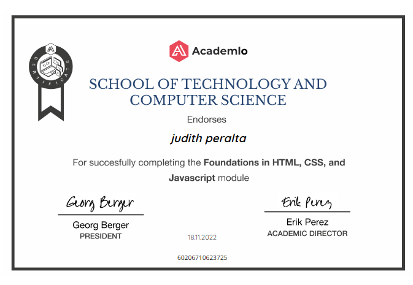

Resume
Estudiante Desarrollo web Full Stack y ciencias de la computación. Creo en el diseño como una potente herramienta de transmisión para comunicar valores, ideas y emociones. Por lo tanto, en mis trabajos siempre he intentado transmitir la pasión que siento por la profesión y un alto grado de implicación y perfeccionismo para conseguir siempre el mejor resultado.
Education
Desarrollador web full stack
2022 - 2023
Academlo
Desarrollador web full stack, con conocimientos en HTML, Css, JavaScript, REACT y Node.js.
Click en el certificado para su verificación 
Profesorado de Educación Inicial
2015 - 2018
Instituto de Formación docente "Martiniano Leguizamón"
Docentes en educación infantil de 0 a 5 años.